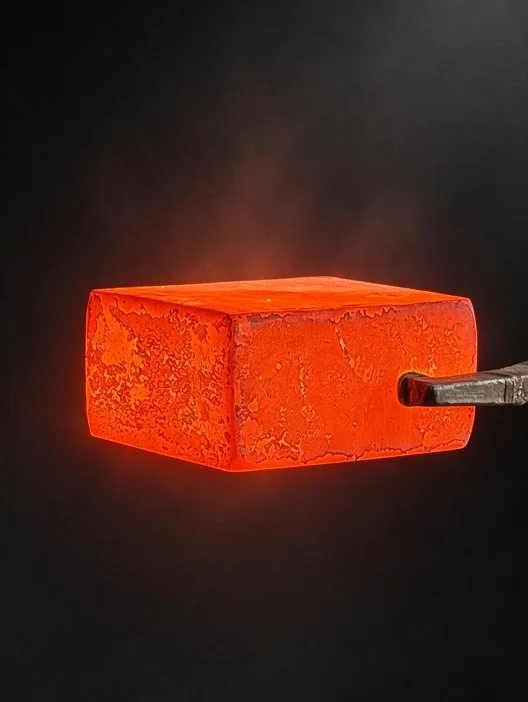
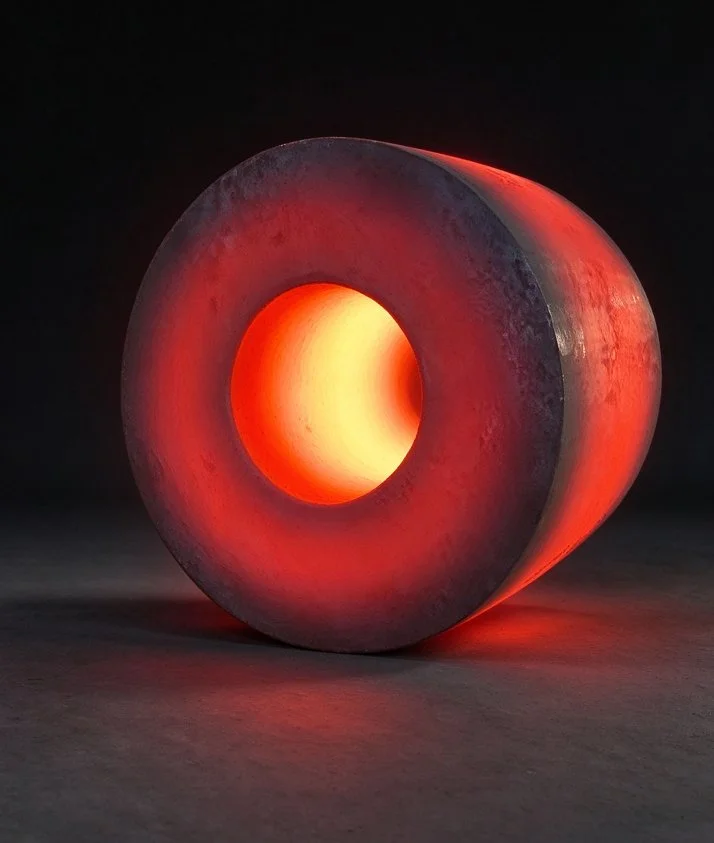
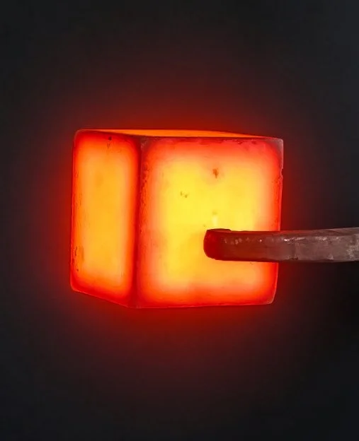

热作模具钢锻件供应：主营热锻模、挤压模块、挤压筒内衬、型材挤压模、挤压杆，采用 H13、5CrNiMo、5CrNi2MoV、H18、S320 等热作模具钢锻造成形 → 热处理 → 检测 → 交检发货。
热作模具长期承受高温与交变热应力，坯料的组织均匀性直接决定模具寿命。我们以锻造成形破碎铸态组织、细化碳化物并使流线合理分布，经球化退火获得均匀的球状珠光体组织、改善切削加工性并降低淬火开裂倾向，配套金相检验（夹杂物、晶粒度、球化退火组织）与力学性能检测，UT 探伤逐件验证内部质量，检测报告随货。
| 主营产品 | 热锻模 · 挤压模块 · 挤压筒内衬 · 型材挤压模 · 挤压杆 |
|---|---|
| 常用材质 | H13（4Cr5MoSiV1 · DIN 1.2344 · JIS SKD61）· 5CrNiMo（DIN 1.2713 · JIS SKT4 · AISI L6）· 5CrNi2MoV（≈DIN 1.2714）· H18 · S320 等，按图纸与工况选材 |
| 供货形态 | 锻造毛坯 / 光坯交货 |
| 质量控制 | 化学成分 · 力学性能 · UT 探伤 · 金相检验（夹杂物 / 晶粒度 / 球化退火组织）· 硬度检测 |
| 标准依据 | GB/T 228.1 力学性能（ISO 6892-1 · ASTM E8/E8M）· GB/T 6402 超声检测（ASTM A388 · EN 10228-3 · JIS G 0587）· GB/T 1299（ISO 4957 · JIS G 4404） 工模具钢 · NADCA #207 / SEP 1614 / VDG ASA 金相（按客户图纸与验收标准执行） |



覆盖锻造与挤压两大热成形工艺的模具用锻件
锤锻模、压力机锻模等热锻模具锻件，H13、5CrNiMo 等牌号锻造成形，抗热疲劳、抗开裂，适配各类热锻工况。
挤压模具用模块锻件，组织致密、等向性能好，大截面模块经充分锻造与热处理，硬度均匀、寿命稳定。
挤压筒内衬套类锻件，承受高温高压与剧烈摩擦，锻造成形保证壁厚方向组织与硬度均匀，抗热磨损。
铝型材挤压模、挤压杆（挤压轴）等工装锻件，按图定制规格与材质，配套热处理与检测，来图来样均可。
从材料到成品，每个环节都有检测背书
充分锻打破碎铸态粗大组织，碳化物均匀细小、流线合理，模具抗热疲劳与抗开裂能力显著提升。
H13、5CrNiMo、5CrNi2MoV 等热作模具钢的球化退火工艺成熟，组织均匀、硬度区间按图纸交付，便于后续机加工与淬火。
金相检验（夹杂物、晶粒度、球化退火组织）与力学性能检测配套，内部质量与性能双重把关。
化学成分、力学性能、UT 探伤、金相报告随货，每批可追溯、可验证。
每一道工序数据留痕，让每件模具坯料可验证、可追溯
热作模具长期承受高温、交变热应力与冲击载荷。锻造成形可破碎铸态粗大组织、使碳化物均匀细小分布、金属流线合理走向，显著提升模具的抗热疲劳与抗开裂能力。铸态坯料或轧材做大型模块时，等向性能不足，模具寿命波动大。
H13（4Cr5MoSiV1）耐热疲劳性好，是热锻模与铝型材挤压模的主流材料；5CrNiMo 韧性突出，适合锤锻模与大型热锻模具；5CrNi2MoV 在 5CrNiMo 基础上提高淬透性与综合性能，适合大截面模块。H18、S320 等牌号按工况与客户指定选用，我们按图纸与验收标准组织生产。
内衬、挤压杆类锻件我们按图锻造并留合理加工余量，粗车/精加工后交货，配合热处理消除应力。具体尺寸公差、直线度与硬度区间以客户图纸为准，可在技术评审阶段对接确认。
常规随货提供化学成分报告、力学性能报告与 UT 超声波探伤报告；模具钢类可按需增加金相检验（非金属夹杂物、晶粒度、球化退火组织）与硬度均匀性检测，批批留痕、可追溯。